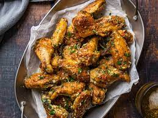

Parmesian Wings Recipe

Description
Ingredients
- 1 1/2 teaspoons
- kosher salt 1 teaspoon
- garlic powder 1/2 teaspoon
- freshly ground black pepper
- chicken wings
- Parmesan cheese, finely grated (about 1/4 cup), plus more for serving
- fresh parsley leaves
- garlic 4 tablespoons
- Unalted Butter
Steps
- Arrange a rack in the middle of the oven and heat the oven to 400ºF. Line a rimmed baking sheet with aluminum foil and fit a wire rack inside.
- Place 1 1/2 teaspoons kosher salt, 1 teaspoon garlic powder, and 1/2 teaspoon black pepper in a small bowl and stir to combine.
- If needed, prepare 2 pounds chicken wings: use a chef's knife or kitchen shears to cut through the first joint of each wing to remove the wing tip. (Discard or freeze for stock.) Cut through the second joint to separate the wing into the forearm (flat) and upper arm (drumette) sections.
- Pat the wings dry with paper towels. Place on the rack in a single layer and sprinkle the tops with the salt mixture.
- Roast until the wings are cooked through and the skin is crispy, 45 to 50 minutes. Meanwhile, prepare the following, placing them all in the same large bowl: finely grate 1 ounce Parmesan cheese (about 1/4 cup), finely chop 2 tablespoons fresh parsley leaves, and mince 3 garlic cloves. A few minutes before the wings are done, melt 4 tablespoons unsalted butter. Set aside to cool slightly, then stir the butter into the Parmesan mixture.
- Add the wings with to the Parmesan mixture and toss until well-coated. Transfer the wings to a large plate or platter and top with more grated Parmesan, if desired.